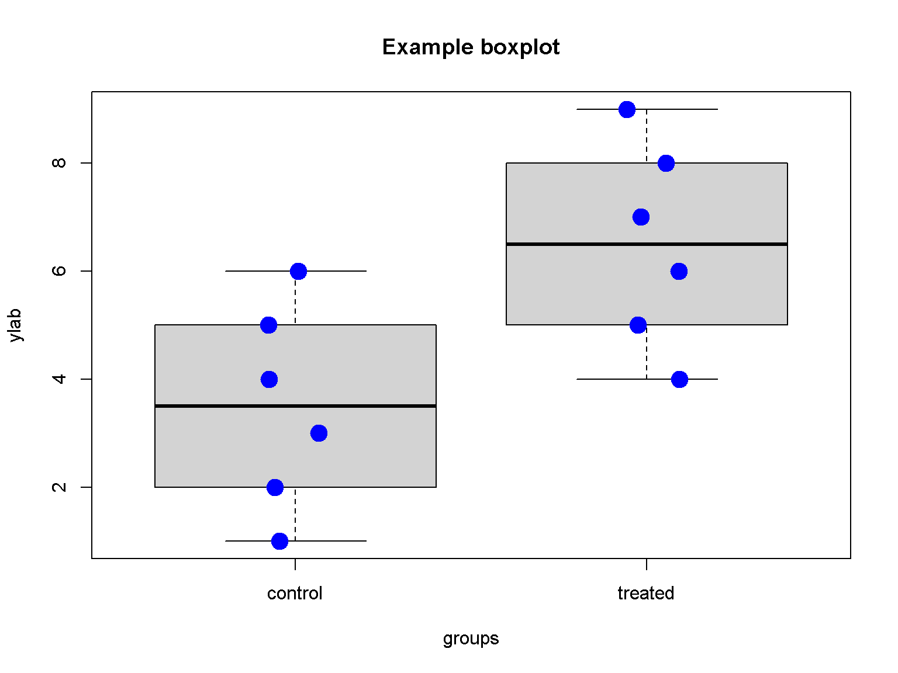
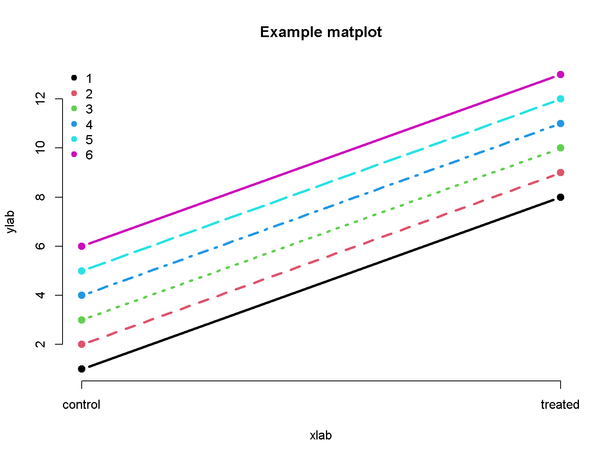
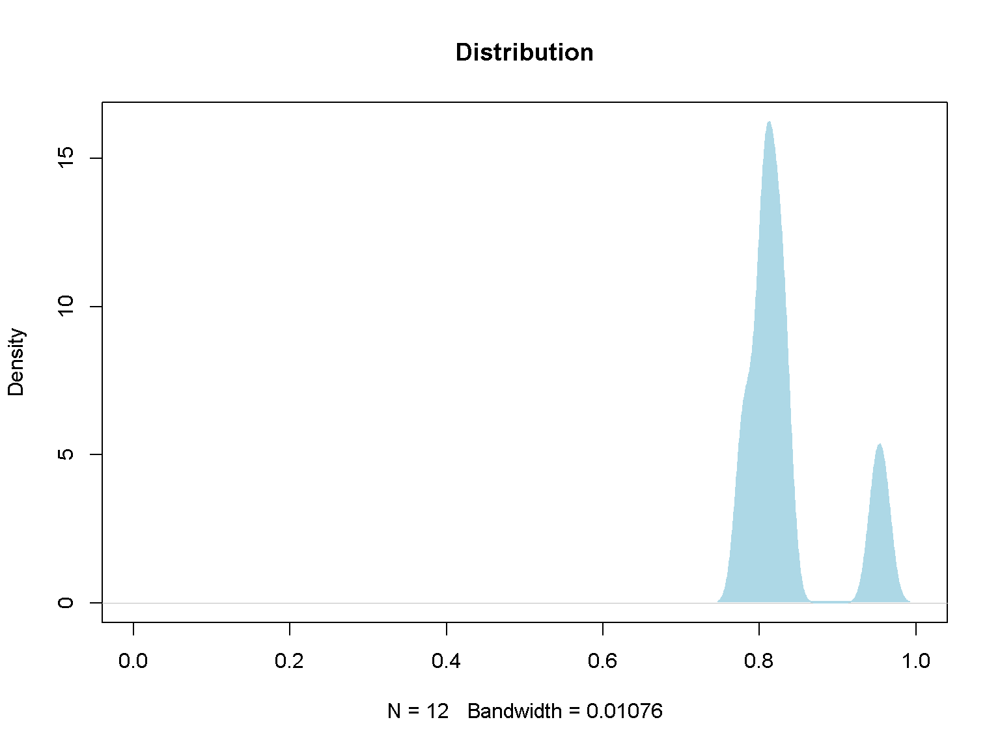

Data visualization in R
Thang V Pham
07 March 2020
This document serves as a template for several R plotting functions. Adapt the type of visualization you need for your data
Scatter plot and lines
plot(c(2, 3, 5, 7, 11), c(2, 6, 7, 1, 4), type = 'b', col = "red", pch = 19)
lines(c(2, 3, 5, 7, 11), c(3, 4, 7, 3, 1), type = 'l', col = "green", pch = 20)
lines(c(2, 3, 5, 7, 11), c(5, 2, 4, 6, 5), type = 'p', col = "blue", pch = 21)A frequently used parameter is pch for the symbol.
par(mar = c(0, 0, 0, 0), mfrow = c(5, 6)) # 6 row, 5 columns
for (j in 0:25) {
plot(0, 0, pch = j, cex = 3, col = "steelblue", axes = FALSE, xlab = "", ylab = "")
text(0, 0, j, pos = 3, offset = 2, cex = 2)
}Reset the graphics device.
dev.off()par(mar = c(0, 0, 0, 0), mfrow=c(7, 1)) # 6 row, 5 columns
for (j in 0:6) {
plot(c(0, 1), c(0, 0), lty = j, type = "l", lwd = 3, col = "steelblue", axes = FALSE, xlab = "", ylab = "")
text(0.5, 0, paste0("lty = ", j), pos = 3, offset = 1, cex = 2)
}Reset the graphics device.
dev.off()R squared
Check ?plotmath for displaying mathematics symbols and equation.
x <- c(2, 3, 5, 7, 11)
y <- c(3, 2, 4, 6, 14)
plot(x, y, type = 'p', col = "blue", pch = 19)
m <- lm(y ~ x)
abline(m$coefficients, col = "red", lwd = 3)
legend("topleft",
legend = bquote(italic(R)^2 == .(sprintf("%.02f", summary(m)$r.squared))),
bty = "n")Barplot
barplot(c(11, 7, 5, 3, 2),
main = "Performance index",
horiz =TRUE,
las = 1,
xlab = "ABCDE",
names.arg = c("a", "b", "c", "d", "e"),
col = "firebrick",
border = NA,
cex.names = 2)A barplot with different spaces between bars.
barplot(c(11, 7, 5, 3, 2, 1),
main = "Performance index",
las = 1,
xlab = "ABCDEF",
names.arg = c("a", "b", "c", "d", "e", "f"),
space = c(0.2, 0.2, 1, 0.2, 1, 0.2),
col = "firebrick",
border = NA,
cex.names = 2)Boxplot
dat <- list(v = as.numeric(c(1:6, 1:6 + 3)),
groups = c(rep("control", 6), rep("treated", 6)))
boxplot(v ~ groups,
data = dat,
ylab="ylab",
main = "Example boxplot")
stripchart(v ~ groups, vertical = TRUE, data = dat,
method = "jitter", add = TRUE, pch = 20, col = "blue", cex = 3)
boxplot(1:6,
1:6 + 3,
1:6 - 3,
1:6 - 5,
at = c(1,2, 4, 5),
names = c("A", "B", "C", "D"),
col = "lightblue",
whisklty = 1,
staplelty = 0)Matplot
The matplot function is useful for time-course data.
matplot(rbind(1:6, 1:6 + 7), type = 'b', col = 1:6 , pch=19, ylab="ylab", lwd = 3, axes = F, main = "Example matplot", xlab = "xlab")
axis(2)
axis(side=1,at=1:2,labels=c("control", "treated"))
legend("topleft", legend = 1:6, col = 1:6, pch=19, bty = "n")
Correlation plot
First we create a user-defined correlation matrix. We can then show a correlation plot using the basic heatmap() function.
tab <- matrix(c(0, 11, 2, 13, 2, 8, 9, 7, 4, 3, 1, 2, 0, 2, 2, 1),
nrow = 2,
dimnames = list(c("Yes", "No"),
paste0("Group_", 1:8)))
print(tab)## Group_1 Group_2 Group_3 Group_4 Group_5 Group_6 Group_7 Group_8
## Yes 0 2 2 9 4 1 0 2
## No 11 13 8 7 3 2 2 1res <- matrix(1, nrow = 8, ncol = 8)
tab <- tab + 0.01
for (i in 1:7) {
for (j in (i+1):8) {
res[i, j] <- (tab[1, i] * tab[2, j] - tab[1, j] * tab[2, i]) / sqrt((tab[1, i] + tab[1, j]) * (tab[2, i] + tab[2, j]) * (tab[1, i] + tab[2, i]) * (tab[1, j] + tab[2, j]))
res[j, i] <- res[i, j]
}
}
# Get some colors
col<- colorRampPalette(c("blue", "white", "red"))(20)
heatmap(x = res, col = col, symm = TRUE, labRow = colnames(tab), labCol = colnames(tab))Another tool is the corrplot package. One can install this package from a standard R distribution install.packages("corrplot").
colnames(res) <- colnames(tab)
rownames(res) <- colnames(tab)
corrplot::corrplot(res, number.cex = .7, method = "number")Density plot
v <- c(0.9477538, 0.9592793, 0.8016799, 0.8054666,
0.8162191, 0.8305740, 0.8251865, 0.8092851,
0.8098058, 0.7786652, 0.7820299, 0.8316563)
d <- density(v)
plot(d, main="Distribution", xlim = c(0, 1))
polygon(d, col="lightblue", border="lightblue")
Venn diagram
par(pty="s", mar = c(0, 0, 0, 0))
plot(c(-2.2, 2.2), c(-2.2, 2.2), asp = 1, type='n', axes = FALSE, ann = FALSE)
symbols(x = -0.7, y = 0, circles = 1.5,
inches = FALSE, add = TRUE, lwd =3)
symbols(x = 0.7, y=0, circles = 1.5,
inches = FALSE, add = TRUE, lwd = 3)
text(0, 0, 1, cex = 2)
text(-1.5, 0, 2, cex = 2)
text(1.5, 0, 3, cex = 2)
par(pty = "s", mar = c(0, 0, 0, 0))
plot(c(-2.2, 2.2), c(-2.2, 2.2), asp = 1, type = 'n', axes = FALSE, ann = FALSE)
symbols(x = -0.7, y = 0.7, circles = 1.5,
inches = FALSE, add = TRUE, lwd = 3)
symbols(x = 0.7, y = 0.7, circles = 1.5,
inches = FALSE, add = TRUE, lwd = 3)
symbols(x = 0, y = -0.7, circles = 1.5,
inches = FALSE, add = TRUE, lwd = 3)
text(0, 0.1, 1, cex = 2)
text(0, 1.3, 2, cex = 2)
text(0, -1.4, 3, cex = 2)
text(-0.9, -0.3, 4, cex = 2)
text(0.9, -0.3, 5, cex = 2)
text(-1.4, 1, 6, cex = 2)
text(1.4, 1, 7, cex = 2)Combining plots
A quick way to place multiple plots in a figure
par(mfrow = c(1, 2)) # 1 row, 2 columns
# plot 1
plot(c(2, 3, 5, 7, 11), c(2, 6, 7, 1, 4), type = 'b', col = "blue", pch = 19)
lines(c(2, 3, 5, 7, 11), c(3, 4, 7, 3, 1), type = 'b', col = "red", pch = 22)
# plot 2
barplot(c(11, 7, 5, 3, 2),
main = "Performance index",
horiz =TRUE,
las = 1,
xlab = "ABCDE",
names.arg = c("a", "b", "c", "d", "e"),
col = "firebrick",
border = NA,
cex.names = 2)And a more elaborate method
plot.new()
# plot 1
par(fig = c(0, 0.4, 0, 1), new = TRUE) # x1, x2, y1, y2
plot(c(2, 3, 5, 7, 11), c(2, 6, 7, 1, 4), type = 'b', col = "blue", pch = 19)
lines(c(2, 3, 5, 7, 11), c(3, 4, 7, 3, 1), type = 'b', col = "red", pch = 22)
# plot 2
par(fig = c(0.4, 1, 0, 1), new = TRUE)
barplot(c(11, 7, 5, 3, 2),
main = "Performance index",
horiz =TRUE,
las = 1,
xlab = "ABCDE",
names.arg = c("a", "b", "c", "d", "e"),
col = "firebrick",
border = NA,
cex.names = 2)Close the device and reset the graphics device’s parameters.
dev.off()PCA
An example of PCA visualization of 8 samples.
d <- read.delim("https://tvpham.github.io/data/example-3groups.txt")
head(d)## a1 a2 a3 b1 b2 b3 c1 c2
## 1 624 496 509 414 394 375 325 288
## 2 615 854 930 341 523 360 359 329
## 3 553 560 745 819 490 481 480 500
## 4 525 412 401 354 321 310 258 228
## 5 484 284 315 268 282 307 270 298
## 6 482 348 400 242 365 367 81 118pca <- prcomp(t(d), center = TRUE, scale = TRUE)
projection <- predict(pca, newdata = t(d))
plot(projection[, c("PC1", "PC2")], pch = 19, main = "PCA plot",
col = c("red", "red", "red",
"green", "green", "green",
"blue", "blue"),
xlab = "PC 1", ylab = "PC 2")t-SNE
An example of t-SNE visualization of 8 samples. The R package Rtsne is required. Try install.packages("Rtsne") if needed.
Setting a random seed will help in reproducibility. Consult the user manual for setting other parameters; in particular, the parameter perplexity will depend on the sample size.
d <- read.delim("https://tvpham.github.io/data/example-3groups.txt")
head(d)## a1 a2 a3 b1 b2 b3 c1 c2
## 1 624 496 509 414 394 375 325 288
## 2 615 854 930 341 523 360 359 329
## 3 553 560 745 819 490 481 480 500
## 4 525 412 401 354 321 310 258 228
## 5 484 284 315 268 282 307 270 298
## 6 482 348 400 242 365 367 81 118require(Rtsne)
set.seed(1)
tsne <- Rtsne(t(d), dims = 2, perplexity = 2, max_iter = 5000)
plot(tsne$Y, pch = 19, main="t-SNE",
col = c("red", "red", "red",
"green", "green", "green",
"blue", "blue"),
xlab = "t-SNE 1", ylab = "t-SNE 2")ROC curve
The R package pROC is required. Try install.packages("pROC") if needed.
require(pROC)
r <- roc(controls = c(2, 3, 5, 7, 11),
cases = c(4, 20, 18, 6, 9, 15))
plot(r, print.auc = TRUE)Graphics devices
A frequently used function pair is pdf() and dev.off(). The function pdf() tells R to direct the graphics to a pdf file. The funtion dev.off() tells R to close the file. If in the middle you have done something wrong, do not panic. Call dev.off() several times and start over.